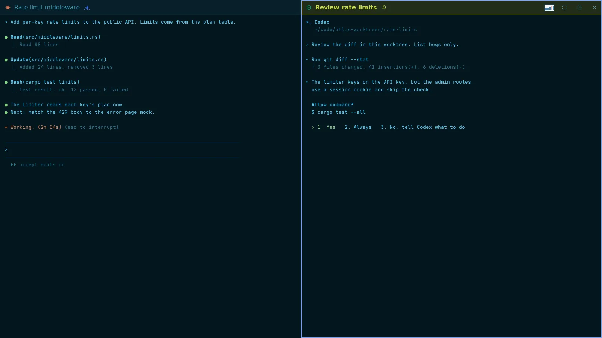
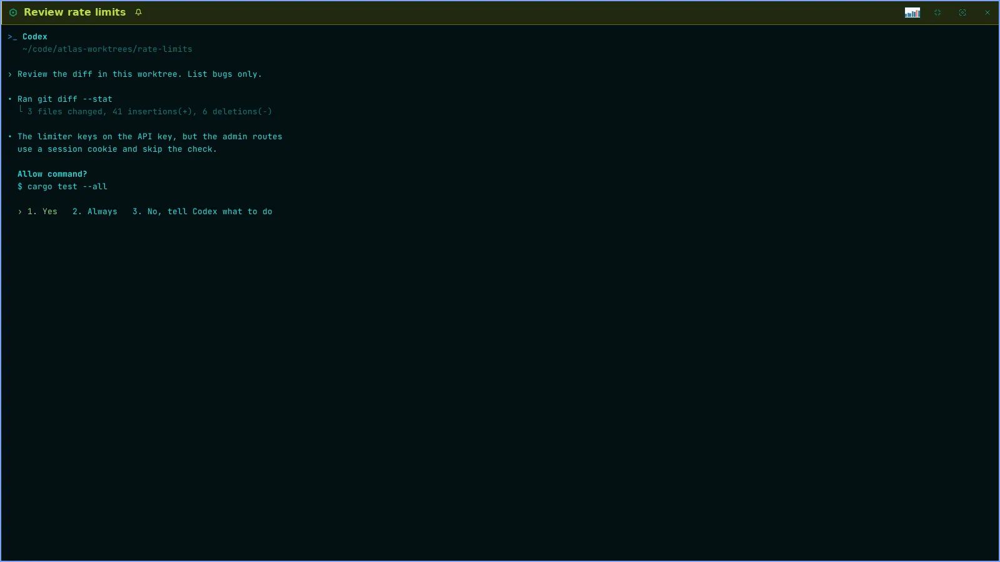

Skiff
SkiffFocus mode, maximize and Mission control
Three views for different moments. Focus mode hides everything but the panes. Maximize fills the window with one pane. Mission control draws the whole agent hierarchy as a graph.
Focus mode
- Show a session or a group. Press Ctrl+Shift+E, or click the focus button at the right of the pane header. The item is also in the View menu and in the pane's right-click menu.
- The side panel, the top bar and the status bar go away. The panes of the view fill the window.
- Press Ctrl+Shift+Up or Ctrl+Shift+Down to move the keys to the next or previous pane of the view.
- Press Ctrl+Shift+E again to leave. Going to another view, with Ctrl+Shift+J, the palette or a project key, leaves it too.

On Admiral's pane, focus mode keeps the Ledger panel. Maximize hides it.
Full screen: maximize a pane
- Focus a pane of a group. Press Ctrl+Shift+Enter, or click the maximize button in the pane header. The item is also in the View menu as Maximize pane.
- That pane alone fills the window, with the same chrome hidden.
- Press Ctrl+Shift+Up or Ctrl+Shift+Down to maximize the next or previous pane of the group in its place.
- Press Ctrl+Shift+Enter again, or click Restore pane, to go back. From focus mode, a maximize goes back to focus mode.

With one pane on screen, focus mode and maximize are the same view. Either key leaves it.
Mission control
Mission control is a canvas over the whole window with the agent hierarchy as a graph: Admiral at the top, the fleet and project Skippers under it, each project a cluster of session cards, and strings between them for the hand-offs and tasks in the ledger. It shows who works, who waits and who gave what to whom, and takes you to one of them. It is read-only: keys do not go to the sessions.
- Press Ctrl+Shift+A, or click View › Mission control. The graph opens fitted to the window, then closer on the session you came from.
- A card is one session: the state mark, the agent, the title, and its ledger task with the task's uid. A Skipper's card counts its panes that work, wait and are open. The time in its head says how long the session has been in its state.
- A string from Admiral to a Skipper is a hand-off, with its title on the string. A Skipper to a pane is a task. A string takes the child's state color: blue with marching dashes while it works, amber while it waits, grey when it is done.
- Click Running or All at the right of the search cell, or press Ctrl+Shift+E. Running dims every card that does not work or wait, and folds a project with nothing running to one card. Skiff remembers the choice.
- Drag empty space or use the wheel to pan, Ctrl+wheel to zoom, Home to fit. Drag a card to reorder it in its cluster: it snaps into a slot, and dropped outside its frame it springs back. Drag a cluster by its head: a project stays inside its fleet frame, which grows; fleets, projects in no fleet, Other and Admiral move freely, and Ctrl+Shift+M › Arrange resets. Click the chevron in a cluster head to fold it.
- The panel under the canvas shows the lit card: the last lines of its screen, its task, owner, state and result. Ctrl+Alt+Shift+L folds it to a rail.
- Use the arrows to light a card: Up the parent, Down the first child, Left and Right the cards beside it. Ctrl+Shift+J lights the next waiting card. Press Enter, or click a card, to go to that session. Ctrl+Shift+Enter goes to it maximized, and again comes back to the board.
- Press Ctrl+Shift+P to search the cards by project, agent, title, task or state. Press Ctrl+Shift+A or Esc to close. With text in the search, the first Esc clears it.
![Mission control in the Running view. Admiral at the top. Under it a Web fleet frame with its Skipper and two project clusters, storefront and checkout, an api project with its own Skipper, a docs project and a folded Other. Strings run from Admiral to the Skippers with the hand-off titles Release 1.8 and Rate limits on /v2/send, and from the Skippers to their task cards. One card, Commodore Doubloon in checkout, is amber: it waits for an approval. The panel under the canvas shows its screen and its task.](../../../shots/guide-mission-control.webp)
A waiting card out of view shows as an amber square at the edge of the canvas. Click it to bring the card into view. The wiki page lists every key and mouse action.